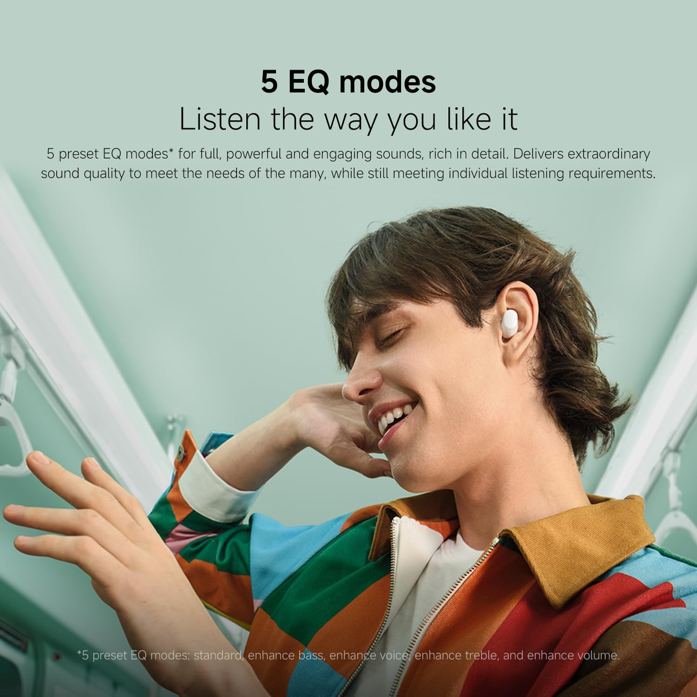

Economicos, in-ear
Xiaomi Redmi Buds 6 Play vs Blik Air500: El duelo de calidad por menos de 13 mil pesos
Publicado el 14 de Julio, 2026 por Kral Tech
Buscando audífonos inalámbricos en Chile es fácil tentarse con opciones caras, pero ¿qué pasa cuando el presupuesto es sagrado y no queremos gastar más de quince mil pesos? Hoy ponemos frente a frente a dos gigantes del ahorro: los Xiaomi Redmi Buds 6 Play y los Blik Air500. Analizamos su sonido, comodidad y si realmente valen lo que cuestan.
Comparación Rápida
| Característica | Xiaomi Redmi Buds 6 Play | Blik Air500 |
|---|---|---|
| Precio Estimado | $11.990 CLP | $12.990 CLP |
| Autonomía | Hasta 36 horas | Hasta 30 horas (Al 50% de volumen) |
| Cancelación de Ruido | Reducción de ruido por IA en Llamadas | Cancelación de ruido ambiental (ENC) (2 micrófonos) |
| Proteccion al agua y polvo | Certificacion IPX4 | Certificacion IPX4 |
| Tamaño del driver | 10 mm (Ajustado por Xiaomi Acoustic Lab) | 13 mm (Bajos más profundos) |
| Carga Rapida | Sí (10 min = 3 horas de música) | Carga completa en 2h |
| Personalización | Compatible con App Xiaomi Earbuds (5 ecualizaciones) | Control táctil integrado |
1. Xiaomi Redmi Buds 6 Play: El gigante del ahorro

"o te dejes engañar por su diseño compacto de tipo 'botón' o 'frijol' de solo 3.6 gramos por auricular. Los Xiaomi Redmi Buds 6 Play destacan en el mercado chileno de audífonos inalámbricos baratos gracias a su compatibilidad con la app oficial Xiaomi Earbuds, permitiéndote cambiar entre 5 modos de ecualización predefinidos. 1 Además, su conectividad Bluetooth 5.4 reduce la latencia al mínimo, ideal si buscas ver videos o jugar en el celular sin retrasos en el audio
Lo Bueno
- Batería imbatible de 36 horas: Excelente autonomía combinada con el estuche de carga para olvidarte del cargador por días.
- Carga rápida eficiente: Con solo 10 minutos de carga obtienes hasta 3 horas de reproducción de música.
- App de personalización (Xiaomi Earbuds): Permite cambiar entre 5 modos de ecualización predefinidos y configurar los controles táctiles.
- CBluetooth 5.4 de baja latencia: Conexión ultraestable y sin retrasos al ver videos o jugar en el celular.
Lo Malo
- Cable de carga extremadamente corto: El cable tipo C incluido en la caja apenas mide unos centímetros.
- Plásticos sencillos: El estuche y los audífonos se sienten muy ligeros y propensos a rayones.
- Ajuste de botón: Al no tener "bastón", a algunas personas les cuesta más acomodárselos o quitárselos rápidamente.
2. Blik Air500: La alternativa compacta

Por otro lado, la marca local Blik saca las garras con los Blik Air500. A diferencia de lo que se suele pensar de los modelos económicos, incorporan un gran driver dinámico de 13 mm que compensa la fidelidad del audio ofreciendo graves con mayor cuerpo. Otro punto fuerte que los separa de su rival es la integración de tecnología ENC (Cancelación de Ruido Ambiental) mediante 2 micrófonos dedicados, lo que reduce el ruido del entorno (como el viento o la calle) para que te escuchen de forma nítida durante las llamadas.
Lo Bueno
- Diseño ergonómico tipo bastón: Muy cómodo para el día a día y con un formato clásico que se sujeta muy bien a la oreja.
- Driver dinámico de 13 mm: Graves y bajos mucho más marcados y potentes que la media de su precio gracias a su parlante de mayor tamaño.
- Tecnología ENC para llamadas: Incorpora cancelación de ruido ambiental en sus micrófonos para que te escuchen más claro en la calle o el transporte.
- Excelente portabilidad: El estuche es plano, ligero y muy cómodo de llevar en los bolsillos del pantalón.
Lo Malo
- Menor autonomía que el rival: Su batería total llega hasta las 30 horas (al 50% de volumen), quedando por detrás de los Xiaomi.
- Sin aplicación dedicada: No cuenta con una app móvil para ecualizar el sonido o actualizar el software.
- Tiempo de carga completo: Requiere cerca de 2 horas para cargarse al 100%, careciendo de un protocolo de carga rápida certificado.
Comparativa Visual

Xiaomi Redmi Buds 6 Play
Diseño compacto de tipo "botón" ultra ligero, ideal para máxima discreción y portabilidad diaria.
Blik Air500
Formato clásico de "bastón" ergonómico, diseñado para un mejor agarre y llamadas más nítidas.
Veredicto definitivo: ¿Cuál comprar por menos de $15.000?
La decisión final depende enteramente de tu estilo de uso
cotidianamente:
Compra los Xiaomi Redmi Buds 6 Play si: Tu prioridad
es la autonomía imbatible (36 horas), confías en el ecosistema de la
marca asiática y quieres la ventaja de una carga rápida eficiente que
te salve el día en solo 10 minutos a través de su aplicación móvil.
Compra los Blik Air500 si: Buscas los mejores
audífonos por menos de 15 mil pesos para realizar llamadas de trabajo
o estudios en exteriores gracias a su cancelación de ruido ENC, o si
prefieres el clásico diseño ergonómico de bastón con un sonido de
graves mucho más marcado.